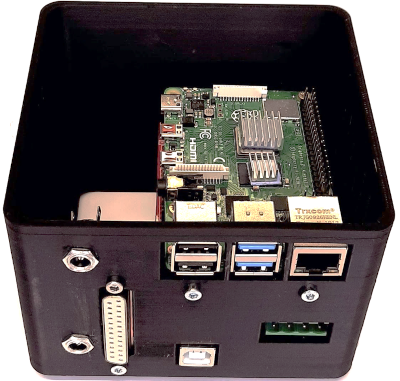

The autoTLCMS interface was upgraded with a new 3D printed plate holder designed to fit all common plate formats in high-performance thin-layer chromatography (HPTLC). A board modification enabled the fully automated hyphenation of HPTLC and HPLC with MS detection, when the autoTLC-LC-MS interface is a new autosampler for LC-MS.
Additionally, the formerly used OC_manager software was trimmed by deleting files and folders not used for autoTLCMS and by updating the scripts, now called TLC-MS_manager.
The new 3D printed parts are in the folder 'Construction Set'. The main parts are still available here.

The recently introduced Raspberry Pi 4B with 4 GB or 8 GB RAM is a rather powerful PC, why the TLC-MS_manager also perfectly runs on this system much cheaper than the NUC-Mini-PC formerly used.
For more information read the publication in ... (2021), authored by Annabel Mehl, Wolfgang Schwack and Gertrud E. Morlock: